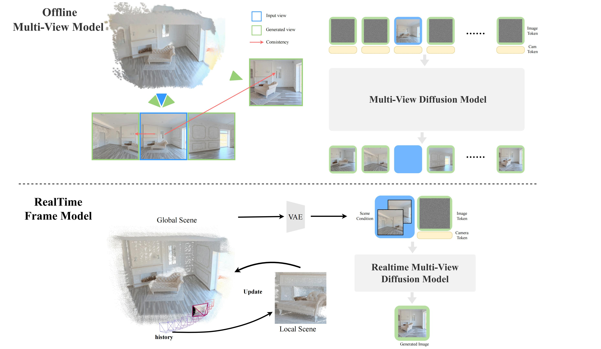

3D World Models vs. 2D World Models: Consistency for Spatial Intelligence
Unlike video generation models that learn purely in the 2D pixel space, the foundation of World Models is consistency. This means that generated content does not arbitrarily drift, change, or disappear over time. Such spatial hallucinations remain prevalent even in the most advanced video generation models today.
We believe that purely 2D learning is insufficient to achieve spatial intelligence. And the most fundamental property of spatial intelligence is 3D multi-view consistency.
In InSpatio-WorldFM, multi-view consistency serves as the core constraint for content generation, both in precomputed spatial representations and during real-time inference. This ensures that the model learns and maintains a coherent understanding of 3D spatial structure, rather than modeling the world as a sequence of unconstrained 2D pixel changes. As a result, InSpatio-WorldFM achieves strong spatial coherence and persistent consistency.
